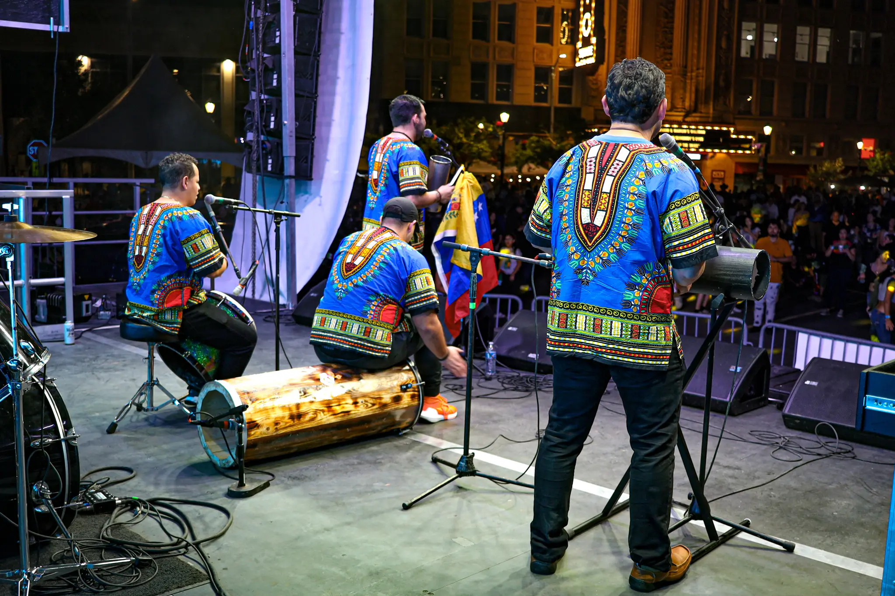
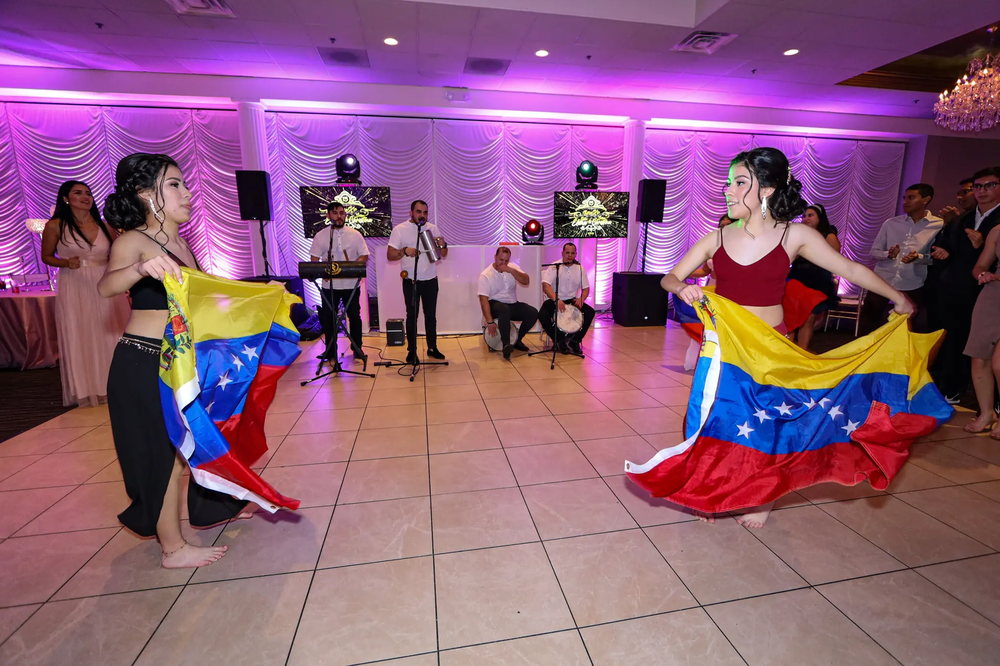

Nuestros Servicios
Show en Vivo
Presentación profesional de tambores venezolanos para festivales, bodas y eventos privados.
Sonido Profesional
Sistema de sonido de alta calidad para garantizar una experiencia impecable.
Interacción con el Público
Hora loca, dinámicas y participación del público para una experiencia inolvidable.